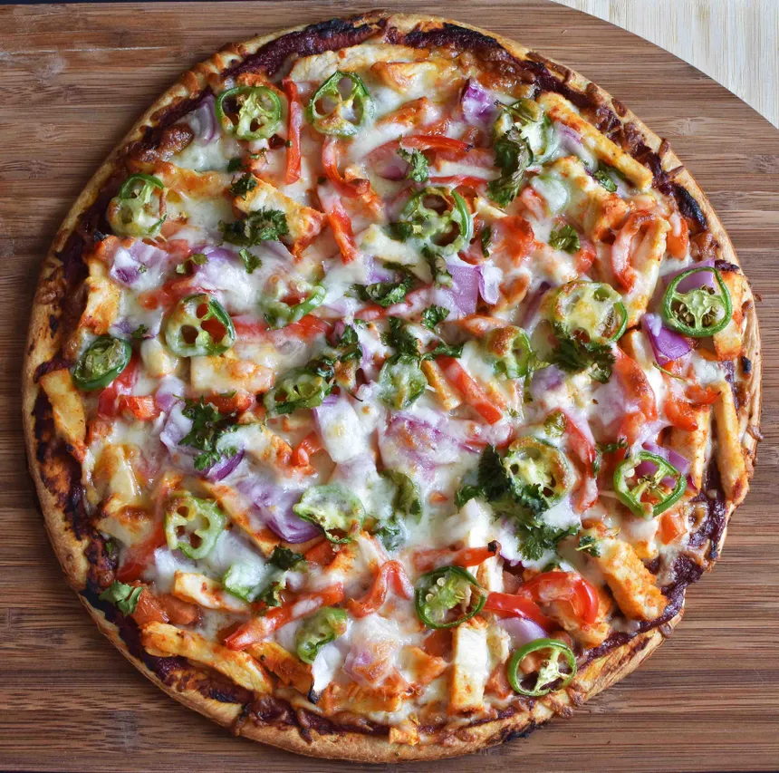

Tandoori Chicken Pizza

This recipe combines the essence of Indian tandoori chicken with the classic Italian pizza, resulting in a unique and flavorful fusion dish. The mango chutney adds a sweet and tangy element, while the cilantro yogurt sauce provides a cooling and creamy contrast.
Ingedients
- 1 ball (1 lb.) prepared whole-wheat pizza dough, at room temperature
- ¾ cup store-bought mango chutney (such as Major Grey’s)
- 1 cup cooked and shredded tandoori chicken (marinated in yogurt, tandoori paste, lemon juice, and garlic)
- 1 cup mozzarella cheese, shredded
- 1/2 cup mixed vegetables (such as bell peppers, onions, and squash);'0
- 2 tbsp olive oil
- Cilantro yogurt sauce (see below for recipe)
- Fresh cilantro leaves for garnish
Steps:
- Preheat oven to 500°F (260°C) with a pizza stone on the lowest rack.
- Roll out the pizza dough to a 15-inch circle. Sprinkle cornmeal on a pizza peel or baking sheet and transfer the dough.
- Spread mango chutney evenly over the dough, leaving a ½-inch border. Top with mozzarella cheese, shredded tandoori chicken, and mixed vegetables.
Drizzle olive oil over the pizza.
- Transfer the pizza to the preheated stone and bake for 10-15 minutes, or until the crust is golden and cheese is melted.
- While the pizza is baking, prepare the cilantro yogurt sauce by blending all ingredients in a mini food processor or blender until smooth.
- Remove the pizza from the oven and drizzle with cilantro yogurt sauce. Garnish with fresh cilantro leaves.
- Serve hot and enjoy!
Enjoy!